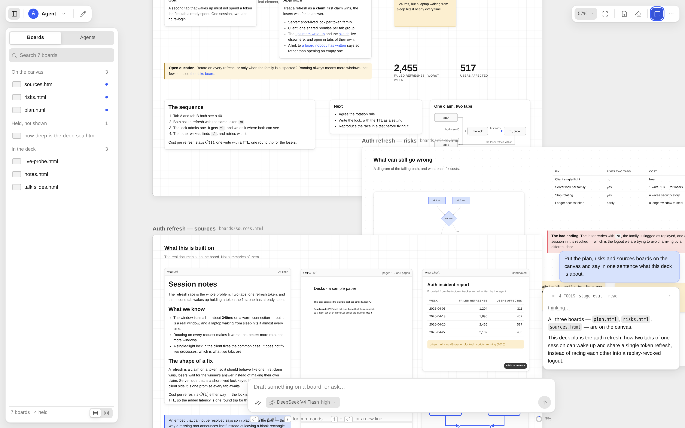

A canvas-centric coding agent
Boards are local HTML files of absolutely-positioned components, laid out on an infinite canvas you pan and zoom. The agent writes them with its ordinary tools, and you drag, resize and retype them. Nothing scrolls away.

A chat scrolls away. A board stays where it was put.
Plain HTML in boards/*.html, absolutely positioned, rendered on an infinite
stage. Read one, diff one, open one in a browser with Decks not running.
It answers on a board, lays designs out on boards, and reports finished work on boards. The chat says which board and why.
A subagent is handed the source of the boards it was given, not a summary of them, and it reports back by changing them.
One tool for the canvas, one file for the artifact, two runtimes behind both.
stage_eval runs code against a typed API injected into the agent's context
verbatim: start a board, put boards in play, hand work to a subagent.
Double-click any run of words and retype it in place. The inspector changes a box's kind, tone, embed target, name and order. Both edits land in the same file.
Markdown, PDF with page ranges, HTML, images, source. Anything a board cannot draw becomes a chip naming the file, its size and its kind.
New boards are blank on purpose. Nine finished ones (d3, three.js, GSAP, Chart.js) ship with the app to borrow structure from.
Chosen when you create an agent and fixed for its life, with Claude's modes and permission prompts surfaced above the input bar.
Drop files onto a board and they land where you dropped them, copied into the deck so a board never breaks. Two fingers pan and pinch; panels become sheets.
Hover the timeline to see the boards as they were at that point in the conversation. Click to rewind; restore the boards only if you ask.
Boards, revisions, dropped files and the arrangement all live in the data directory. A deck moves by moving the folder.
Three commands, and a model to answer.
# Node 22.19 or newer git clone https://github.com/DotIN13/decks.git cd decks npm ci npm run dev # 127.0.0.1:4329, Vite on 4328 npm run dev:example # the demo deck instead of yours
~/.pi/agent/ the Pi CLI uses, so
pi auth once is enough, or set ANTHROPIC_API_KEY. Without one the
canvas and the editor still work; only the agent does not.
npx playwright install chromium.